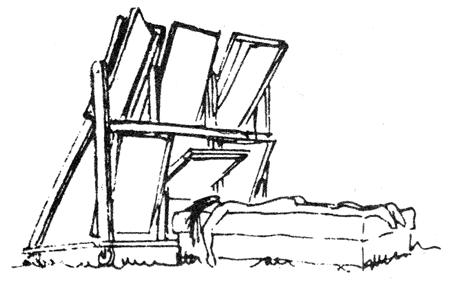

Call it technological overkill, or a kind of Rube Goldberg like fixation, or whatever the fact is, a lot of engineers and scientists involved in today's solar research are coming up with devices so complicated and costly that most folks will never have any use for them. George Donald Graham, however, is one man who still sees the sun as a "people's" power provider and his newly released, self published book Capture the Sun: The Parabolic Curve and its Applications may prove to be the opening of a new door for those who simply want to make use of Ole Sol in the most direct and economical manner possible.
Parabolic curves are nothing new nor are mirrors and reflectors constructed in that shape but a detailed, thoroughly outlined explanation of the basic mathematics behind them is new and useful. If you have a working knowledge of high school algebra and geometry, Mr. Graham's book can show you how to design and construct economical, sun tracking parabolic mirrors of infinitely variable size, which are able to perform virtually any task requiring heat.
Plans for a solar oven and water heater are included in Capture the Sun, but the main idea is to provide you with a "tool" an ability to gather and focus the sun's rays for devising your own applications. The possibilities are endless.
Mr. Graham writes, "It is vitally necessary that we, as individuals, protect our heritage and compete with whatever or whomever is striving to strangle our nation by constructing our own devices, and thereby producing at least a part of our energy needs. We can do it. YOU can do it. You can change the world!"
Maybe with the help of men like George Donald Graham, we can do just that. Copies of Capture the Sun: The Parabolic Curve and its Applications are available for $2.50 from Enterprises Unlimited, Star Route, Ferndale, Calif. 95536 or from MOTHER'S Bookshelf.
|
 |
|
|